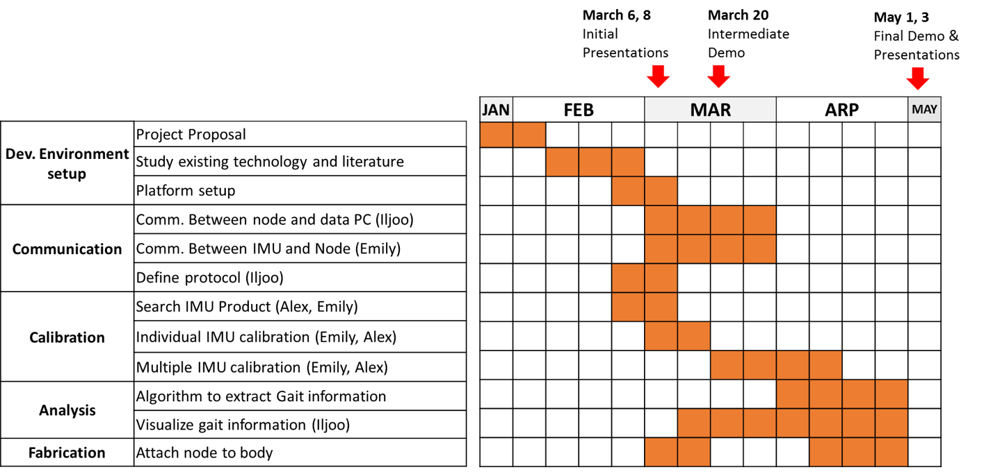

Done
Finished the proposal documentation
Built a website on GitHub
IMU Sensor:
Got 4 Razor IMU sensors
Tested it with ROS, and checked its output
Determined to transmit binary data stream via RF and serial port
ToDO
Develop an interface between serial port and ROS
Modify the IMU firmware to output raw + calculated data
Build the communiation from IMU to Firefly
Build the communiation from Firefly to PC
Solve the time synchronization problem